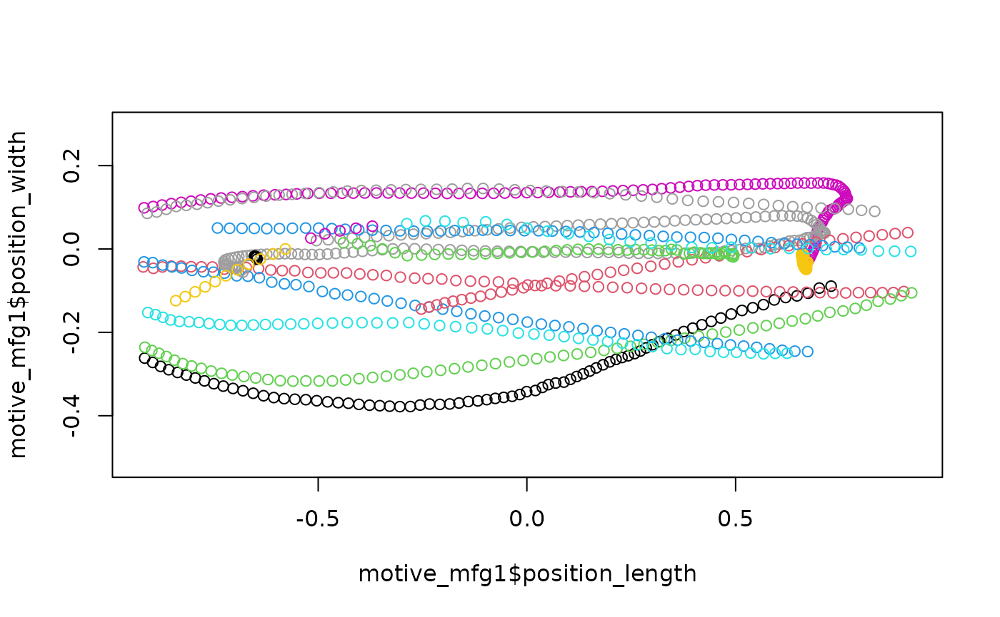
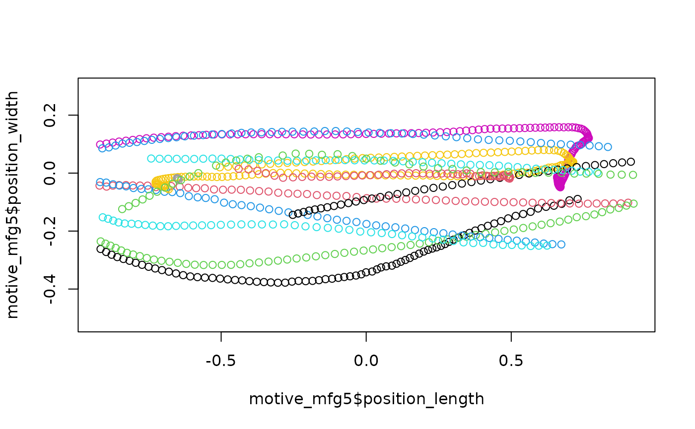
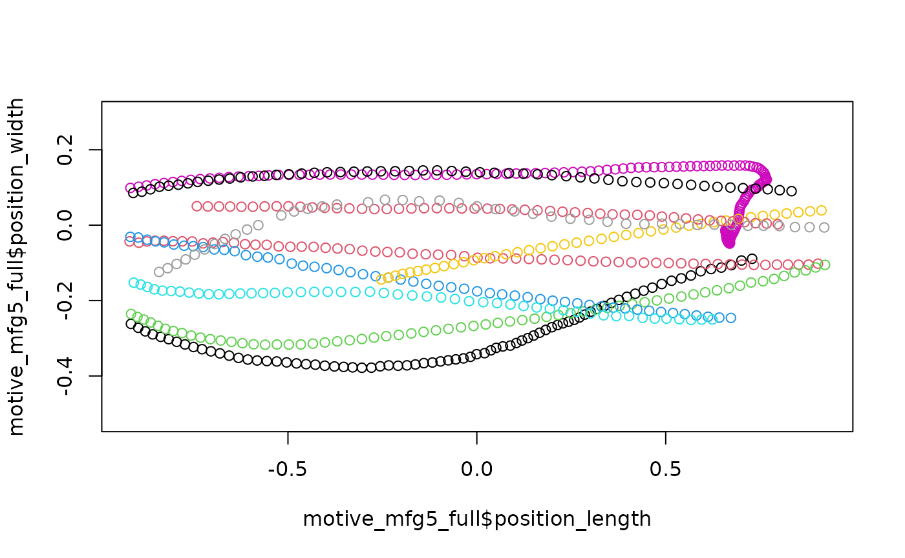

Managing frame gaps with pathviewr
Melissa S. Armstrong
2024-03-02
Source:vignettes/managing-frame-gaps.Rmd
managing-frame-gaps.RmdDefining trajectories with pathviewr
pathviewr defines trajectories as continuous movement from one side of a region of interest to the other. Before trajectories can be defined, the region of interest must be selected via select_x_percent() in addition to all the previous steps of the data import and cleaning pipeline as described in the Data Import and Cleaning vignette. We’ll start with loading pathviewr and a few packages from the tidyverse and importing our data.
## If you do not already have pathviewr installed:
# install.packages("devtools")
# devtools::install_github("ropensci/pathviewr")
library(pathviewr)
library(ggplot2)
library(magrittr)
## Import the example Motive data included in
## the package
motive_data <-
read_motive_csv(
system.file("extdata", "pathviewr_motive_example_data.csv",
package = 'pathviewr')
)We’ll quickly run through the cleanup pipeline using one of pathviewr’s all-in-one cleaning functions as described in the Data Import and Cleaning vignette. Since trajectories are defined in the separate_trajectories() function, we’ll stop the all-in-one there by setting it and every step after it to FALSE so we can take a closer look at how trajectories are defined. Since all steps are set to TRUE by default, we don’t actually need to list them in the function, just those we want to switch to FALSE or those that require additional arguments.
motive_cleaned <-
motive_data %>%
clean_viewr(
desired_percent = 70,
rename_viewr_characters = FALSE,
separate_trajectories = FALSE,
get_full_trajectories = FALSE
)
## Quick plot
plot(motive_cleaned$position_length,
motive_cleaned$position_width,
asp = 1)Inspecting the data
We’ve cleaned up our data and are ready to link individual data points into continuous trajectories. Deciding exactly how to define a trajectory will depend largely on the quality of data collected and the resolution required to answer a given question about the data. If the data are fairly continuous and high resolution is required, the default max_frame_gap = 1 will not allow any frame gaps–movement must be continuous.
motive_mfg1 <-
motive_cleaned %>%
separate_trajectories(
max_frame_gap = 1
)
## Quick plot
plot(motive_mfg1$position_length,
motive_mfg1$position_width,
asp = 1, col = as.factor(motive_mfg1$file_sub_traj))
Plotting each trajectory reveals that perhaps some trajectories that should be continuous have been split into two or more separate trajectories because of a dropped frame or two. This data may require relaxing the stringent no-frame-gaps requirement in order to link data points that should go together into a single trajectory. Let’s try setting max_frame_gap = 5.
motive_mfg5 <-
motive_cleaned %>%
separate_trajectories(
max_frame_gap = 5
)
## Quick plot
plot(motive_mfg5$position_length,
motive_mfg5$position_width,
asp = 1, col = as.factor(motive_mfg5$file_sub_traj))
By increasing the allowable frame gap, more chunks of data have been linked into trajectories and so our trajectory count has dropped from 335 to 224. Because it is hard to see all the trajectories piled up on top of each other, let’s go ahead and run this through get_full_trajectories() to clean out bits of data that do not span our region of interest. To inspect each trajectory individually, we can then use the plot_viewr_trajectories() function to take a closer look at the quality of each trajectory. This can be computationally expensive depending on your data set.
motive_mfg5_full <-
motive_mfg5 %>%
get_full_trajectories(
span = .6
)
## Quick plot
plot(motive_mfg5_full$position_length,
motive_mfg5_full$position_width,
asp = 1, col = as.factor(motive_mfg5_full$file_sub_traj))
## How many trajectories do we end up with?
length(unique(motive_mfg5_full$file_sub_traj))
#> [1] 10
## Plot each trajectory
plot_viewr_trajectories(motive_mfg5_full,
plot_axes = c("length", "width"),
multi_plot = TRUE)Visualize frame gap choice
pathviewr has several tools to help users decide what frame gap allowances may be appropriate depending on their data and resolution needs. visualize_frame_gap_choice() runs the separate_trajectories() function over the same data set as many times as the user would like via the loop argument, each time with a different max_frame_gap allowance. Each loop represents an increase in the max frame gap value of 1. For example the default of loops = 20 will run separate_trajectories() over the data set 20 times, with an increase in the max_frame_gap argument of 1 each time.
motive_cleaned %>%
visualize_frame_gap_choice(
loops = 20
)#> [[1]]
#> # A tibble: 20 × 3
#> frame_gap_allowed trajectory_count file_id
#> <dbl> <dbl> <chr>
#> 1 1 14 .
#> 2 2 11 .
#> 3 3 11 .
#> 4 4 11 .
#> 5 5 11 .
#> 6 6 11 .
#> 7 7 11 .
#> 8 8 11 .
#> 9 9 11 .
#> 10 10 11 .
#> 11 11 11 .
#> 12 12 11 .
#> 13 13 11 .
#> 14 14 11 .
#> 15 15 11 .
#> 16 16 11 .
#> 17 17 11 .
#> 18 18 11 .
#> 19 19 11 .
#> 20 20 11 .
#>
#> [[2]]
#> NULLThe output of visualize_frame_gap_choice() is a tibble and plot of the number of trajectories after running separate_trajectories() with max_frame_gap = 1, max_frame_gap = 2, max_frame_gap = 3, etc. We can see that as the frame gap allowance increases, more bits of data are being linked into continuous trajectories and thus the total number of trajectories decreases. The vertical line on the plot indicates the “elbow” of the plot or the point at which counts of trajectories appear to stabilize and increases in the max_frame_gap allowance no longer effect the trajectory count very much.
Autodetect
Setting max_frame_gap = "autodetect" rather than a numeric value uses the “elbow” of the plots from visualize_frame_gap_choice() to guesstimate the best value(s) for max_frame_gap.
In addition to automatically selecting the max_frame_gap depending on the data, autodetect does so on a per subject basis rather than applying the same allowable frame gap to all data in the data set since frame gaps can vary between subjects.
The cap on how high the max_frame_gap can go is defined as a proportion of the capture frame rate and set by the frame_rate_proportion argument, which defaults to .10.
motive_auto <-
motive_cleaned %>%
separate_trajectories(
max_frame_gap = "autodetect",
frame_rate_proportion = 0.1,
frame_gap_messaging = TRUE,
frame_gap_plotting = TRUE
)
#> autodetect is an experimental feature -- please report issues.
#> For subject: device02, estimated best value for max_frame_gap: 1
#> For subject: device03, estimated best value for max_frame_gap: 2#> For subject: device05, estimated best value for max_frame_gap: 2Our sample data has 3 subjects so with frame_gap_messaging = TRUE, the max_frame_gap for each subject will be reported (the default is FALSE). frame_gap_plotting = TRUE will display the elbow plots for each subject, but also defaults to FALSE.